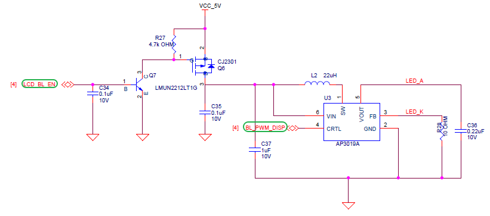
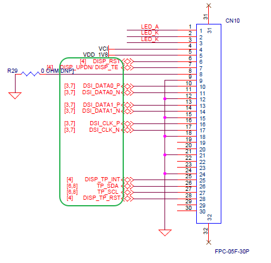
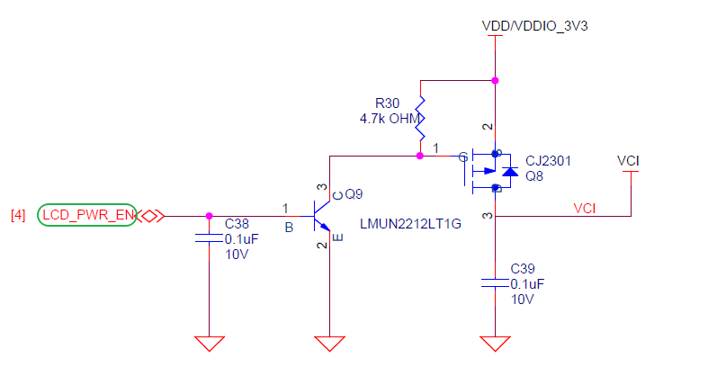
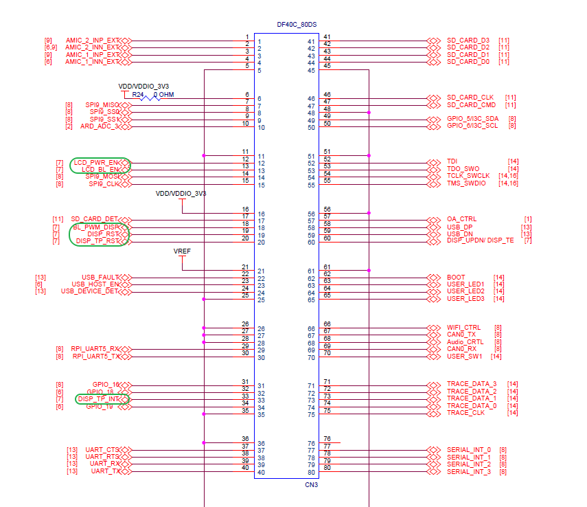
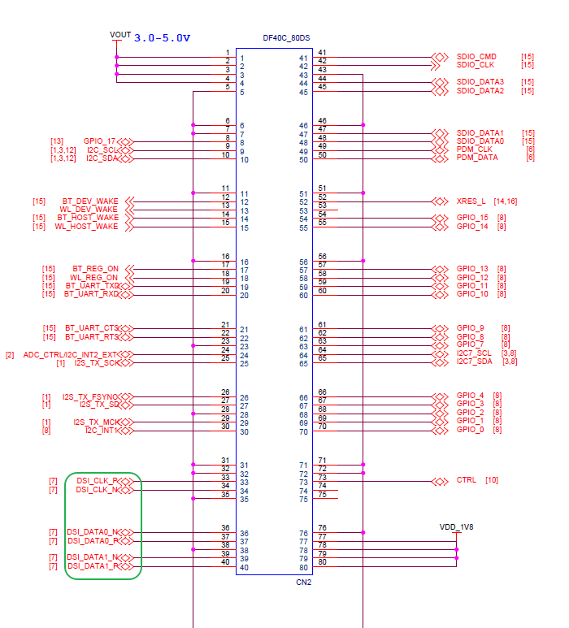
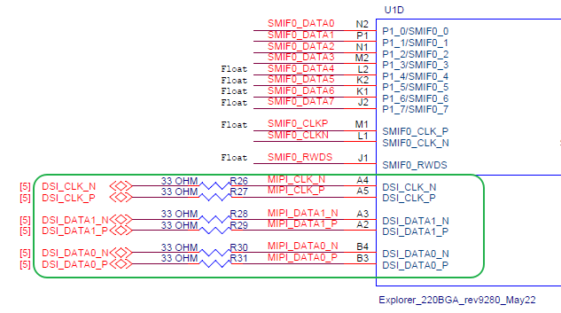
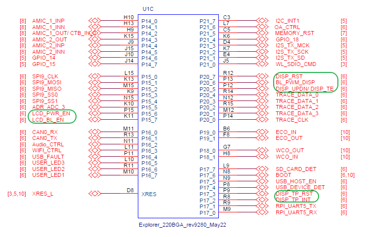

Edgi-Talk_M55_LVGL 示例工程
中文 | English
简介
本示例工程基于 Edgi-Talk 平台，演示 LVGL 图形库与多个显示示例，运行在 RT-Thread 实时操作系统 的 M55 应用核 上。 当前工程默认启动 Virtual3D Animated Emoji 示例，可用于验证 LCD 显示、触摸输入、LVGL 渲染流程以及 M55 侧图形加速相关配置；也可以切换到 LVGL 官方 Music、Benchmark、Stress 等示例，为后续 GUI 应用开发提供基础参考。
LVGL 简介
LVGL（Light and Versatile Graphics Library，轻量且多功能的图形库）是一个开源的嵌入式 GUI（图形用户界面）开发框架。它的设计初衷是为资源受限的嵌入式设备提供流畅、现代化的图形界面，因此在运行效率、内存占用和可移植性方面都做了大量优化。无论是在简单的低端 MCU 上，还是在功能更强大的 MPU 平台上，LVGL 都能够高效运行，并提供丰富的图形控件和交互体验。
主要特点
轻量级 LVGL 最大的优势在于轻量化，它对资源的需求非常低。在一个内存只有几十 KB 的微控制器上，LVGL 依然可以流畅运行。框架本身的内存开销较小，渲染算法经过精心优化，既可以保证较低的 CPU 使用率，又能在有限的硬件条件下呈现出较好的视觉效果。这使得 LVGL 特别适合那些对硬件资源敏感的应用场景，比如低功耗设备、可穿戴设备、家用电器控制面板等。
跨平台 LVGL 的跨平台特性非常突出，它能够运行在多种操作系统之上，包括 FreeRTOS、RT-Thread、Zephyr、Linux 等，也可以直接运行在裸机环境中。开发者只需要为 LVGL 提供底层的显示驱动和输入驱动接口，便可以快速完成移植，从而在不同的硬件平台之间复用同一套 UI 代码。这种灵活性大大降低了开发成本，使得 LVGL 成为嵌入式 GUI 的通用解决方案。
丰富的控件（Widgets） LVGL 内置了种类丰富的 GUI 控件，例如按钮、标签、滑条、进度条、复选框、列表、表格、图表等。这些控件几乎涵盖了常见人机交互界面的需求，开发者无需从零开始设计和实现组件，大大缩短了开发周期。同时，LVGL 还允许用户基于现有控件扩展新的组件，从而构建符合特定需求的界面。无论是简单的数字显示，还是复杂的图形控制界面，LVGL 都能胜任。
多样的渲染能力 在视觉呈现方面，LVGL 提供了丰富的渲染功能。它支持抗锯齿、透明度、渐变、阴影、边框、圆角等效果，可以让界面看起来更加美观和现代。除此之外，LVGL 还内置动画系统，支持多种缓动函数，能够实现平滑的控件移动、渐变过渡和动态效果。这些特性使得界面不仅功能完善，还能带来良好的用户体验。
输入设备支持 LVGL 支持多种输入设备类型，包括触摸屏、电容屏、鼠标、键盘和编码器，甚至可以实现多点触控交互。它提供了统一的输入接口层，开发者只需实现底层的驱动适配，就能轻松把输入事件传递到 LVGL 的事件系统中。这样一来，开发者可以更加专注于上层的界面逻辑，而不必花费过多时间在输入事件处理上。
国际化与多语言 LVGL 在国际化方面也有很好的支持。它使用 UTF-8 编码，可以处理几乎所有语言的字符集。同时，它支持双向文本渲染，可以正确显示如阿拉伯语、希伯来语等从右到左书写的语言。这使得 LVGL 能够应用在面向全球用户的产品中，不同国家和地区的用户都能通过本地化界面获得良好的体验。
可扩展性 LVGL 提供了灵活的主题和样式系统，开发者可以方便地定制控件的外观样式，以实现不同风格的 UI。通过更换主题，可以快速切换界面的整体视觉风格。此外，LVGL 还可以与第三方图形库、文件系统和图像解码器结合使用，从而扩展其功能。例如，可以使用文件系统来加载外部字体和图片，或者集成 JPEG/PNG 解码库来显示复杂图像。
应用场景
LVGL 在实际应用中有着非常广泛的覆盖范围。在消费电子领域，它常用于智能家居控制面板、家电显示屏、智能手表和健身设备等，这些产品往往需要在有限硬件资源下提供友好的用户交互界面。在工业控制领域，LVGL 被用于 HMI（人机交互界面）和各种仪器仪表，帮助用户直观地监控和操作设备。在汽车电子中，LVGL 可以驱动中控屏、副驾娱乐屏，甚至车载仪表盘。而在医疗设备方面，它则适合做小型显示界面，例如手持检测仪、便携式监护设备等。
生态与社区
LVGL 作为一个开源项目，采用 MIT License 开源协议，既适合个人学习，也可以在商业产品中免费使用。围绕 LVGL，已经形成了一个活跃的生态系统。官方提供了 SquareLine Studio 这类可视化设计工具，支持拖拽式设计界面并导出 LVGL 代码，极大地提升了开发效率。此外，LVGL Simulator 可以让开发者直接在 PC 上进行界面调试，不需要每次都烧录到目标硬件上。全球开发者社区十分活跃，贡献了大量开源控件、主题和移植案例，为新手和企业开发者提供了丰富的资源和支持。
硬件说明
背光接口

MIPI接口

PWR接口

BTB座子


MCU接口


软件说明
工程基于 Edgi-Talk 平台开发，运行在 M55 应用核 上。
示例功能包括：
初始化 LVGL 9.2 图形库、LCD 显示驱动和触摸输入驱动
默认启动 Virtual3D Animated Emoji 示例
支持切换 lv_demo_music、lv_demo_benchmark、lv_demo_stress 等 LVGL 示例
默认开启 M55 I-Cache/D-Cache，并使用 AXIDMAC 优化 RGB565 区域拷贝
工程结构简洁，便于理解 显示驱动接口 和 LVGL 移植流程。
示例说明
当前工程通过 BSP_LVGL_DEMO_* 配置项选择启动的 LVGL 示例，默认配置为 BSP_LVGL_DEMO_VIRTUAL3D_EMOJI。
配置项 |
示例 |
说明 |
|---|---|---|
|
Virtual3D Animated Emoji |
当前默认示例。屏幕显示 3D Emoji 动画，支持触摸拖动交互，用于验证 Virtual3D、LVGL 显示刷新和触摸输入链路。该示例仅支持 LCD 旋转 0 度或 180 度。 |
|
LVGL Music Demo |
LVGL 官方音乐界面示例，主要用于验证复杂控件、布局、样式和动画效果。 |
|
LVGL Benchmark Demo |
LVGL 官方性能测试示例，可用于观察界面绘制性能、刷新帧率和综合评分。 |
|
LVGL Stress Demo |
LVGL 官方压力测试示例，会反复创建、刷新和销毁控件，用于验证渲染稳定性和内存使用情况。 |
切换示例时，可在 RT-Thread Settings 或 menuconfig 中修改 LVGL Demo 相关配置项。建议同一时间只选择一个 BSP_LVGL_DEMO_* 示例，修改后重新生成配置并编译下载。

使用方法
编译与下载
打开工程并完成编译。
使用 板载下载器 (DAP) 将开发板的 USB 接口连接至 PC。
通过编程工具将生成的固件烧录至开发板。
运行效果
烧录完成后，开发板上电即可运行示例工程。
默认配置下，系统会自动启动 Virtual3D Animated Emoji，LCD 上显示 3D Emoji 动画，界面标题为
Virtual3D Animated Emoji，底部提示为Drag the 3D emoji。串口会打印当前启动的示例和 LCD 旋转角度，例如：
LVGL virtual3d_emoji demo start, lcd rotation=0
如需查看 Virtual3D 示例状态，可在 MSH 终端执行以下命令：
virtual3d_demo_stat
virtual3d_render_stat
如果切换为 Music、Benchmark 或 Stress 示例，LCD 会显示对应的 LVGL 官方示例界面。
注意事项
⚠️ 注意： 本工程要求使用 RT-Thread Studio 2.2.9 或以上版本。
如需修改工程的 图形化配置，请使用以下工具打开配置文件：
tools/device-configurator/device-configurator.exe
libs/TARGET_APP_KIT_PSE84_EVAL_EPC2/config/design.modus
修改完成后保存配置，并重新生成代码。
当前默认示例
BSP_LVGL_DEMO_VIRTUAL3D_EMOJI不支持 LCD 旋转 90 度或 270 度，请使用 0 度或 180 度；如果需要横屏旋转，请切换到其它 LVGL 示例。默认配置已开启
BSP_LVGL_ENABLE_CPU_CACHE和BSP_LCD_USE_AXIDMAC_AREA_COPY。如需修改缓存、Framebuffer 或 LCD 刷新方式，请同步检查显示缓冲区一致性。若显示屏幕无输出，请检查：
LCD 硬件连接与电源供给是否正常
lv_port_disp.c和lv_port_indev.c的配置是否与实际硬件匹配LCD 旋转角度是否与当前示例兼容
启动流程
系统启动顺序如下：
+------------------+
| Secure M33 |
| (安全内核启动) |
+------------------+
|
v
+------------------+
| M33 |
| (非安全核启动) |
+------------------+
|
v
+-------------------+
| M55 |
| (应用处理器启动) |
+-------------------+
⚠️ 请严格按照以上顺序烧写固件，否则系统可能无法正常运行。
若示例工程无法正常运行，建议先编译并烧录 Edgi_Talk_M33_Template 工程，确保初始化与核心启动流程正常，再运行本示例。
若要开启 M55，需要在 M33 工程 中打开配置：
RT-Thread Settings --> 硬件 --> select SOC Multi Core Mode --> Enable CM55 Core